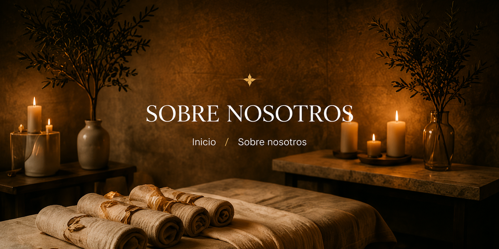
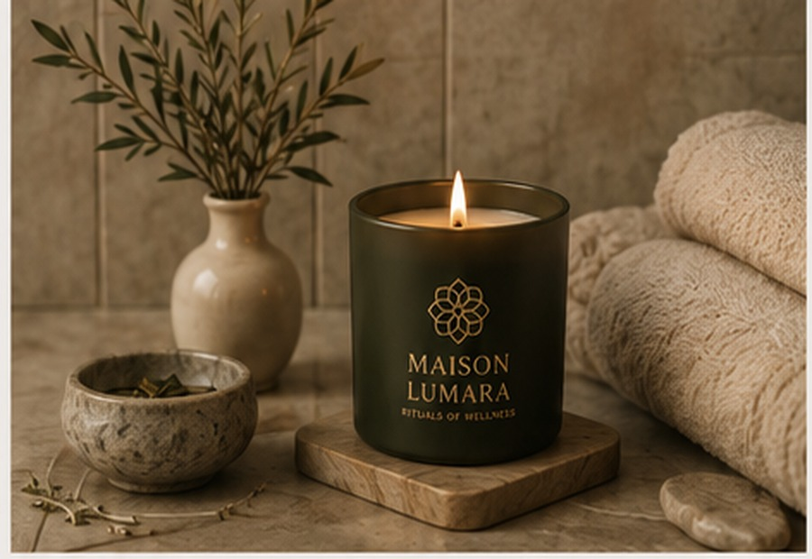

Ritual Ayurveda
Armonía · Energía · Tradición
Inspirado en la sabiduría milenaria Ayurveda, este ritual utiliza aceites aromáticos y movimientos envolventes para equilibrar cuerpo y mente.
Descubrir ritual
Masajes y tratamientos diseñados para restaurar tu cuerpo y belleza natural.
Inspirados en antiguas tradiciones de bienestar y belleza, nuestros rituales combinan técnicas manuales, aceites aromáticos y elementos naturales para ofrecerte una experiencia única de relajación y equilibrio.

Inspirado en la sabiduría milenaria Ayurveda, este ritual utiliza aceites aromáticos y movimientos envolventes para equilibrar cuerpo y mente.
Descubrir ritual
Conchas marinas calientes que se deslizan sobre el cuerpo, liberando tensiones y transportándote a un estado de serenidad profunda.
Descubrir ritual
Piedras volcánicas calientes que relajan la musculatura, mejoran la circulación y liberan tensiones acumuladas.
Descubrir ritual
Pindas calientes de hierbas y especias que, junto con aceites aromáticos, relajan el cuerpo y los sentidos en profundidad.
Descubrir ritual
Un ritual completo que combina técnicas exclusivas para reconectar cuerpo, mente y espíritu.
Descubrir ritualCuerpo, mente y espíritu en armonía.
Utilizamos productos de la más alta calidad y origen natural.
Experiencias adaptadas a tus necesidades y momento.
Un espacio para desconectar y reconectar contigo.

Maison Lumara nace de una idea esencial: el bienestar no es solo una pausa, sino una transformación.
El nombre Lumara surge de la unión de dos conceptos profundamente ligados a esta visión. Por un lado, lumen, del latín, que significa luz; por otro, ara, que hace referencia a un altar, un espacio de conexión y recogimiento. Juntos, evocan un lugar donde la luz se convierte en ritual, y donde el cuidado del cuerpo trasciende lo físico para convertirse en una experiencia consciente.
En Maison Lumara entendemos el bienestar como un proceso natural de equilibrio. Cada ritual está diseñado para acompañar al cuerpo y a la mente hacia un estado de calma profunda, respetando su ritmo y escuchando sus necesidades. No se trata únicamente de relajar, sino de transformar: liberar tensiones, restaurar la energía y crear un espacio donde todo vuelve a su centro.
Inspirados en tradiciones ancestrales y reinterpretados con una sensibilidad contemporánea, nuestros rituales combinan técnicas manuales, aceites aromáticos y elementos naturales para ofrecer experiencias que envuelven los sentidos y generan un bienestar duradero.
Maison Lumara es, en esencia, un lugar íntimo donde el tiempo se detiene. Un espacio donde la luz se convierte en calma, y donde cada detalle está pensado para reconectar contigo.

Significa luz. Representa claridad, energía y presencia consciente.
Significa altar. Representa un espacio sagrado de conexión y recogimiento.
Inspirado en la sabiduría milenaria Ayurveda, este ritual utiliza aceites aromáticos y movimientos envolventes para equilibrar el cuerpo y la mente.
Las técnicas aplicadas ayudan a liberar tensiones, reducir el estrés y favorecer la circulación energética, generando una sensación de bienestar integral. Incluye un delicado ritual inicial de pies con aceites esenciales.
Equilibra cuerpo y mente.
Reduce estrés y tensión.
Favorece la circulación.
Aporta bienestar integral.
Un tratamiento sensorial inspirado en la calma del océano. Las conchas marinas calientes se deslizan suavemente sobre el cuerpo, recreando el ritmo natural de las olas mientras liberan tensiones y relajan la musculatura.
Acompañado de aceites de inspiración marina, este ritual envuelve los sentidos y transporta a un estado de serenidad profunda.
Relaja la musculatura en profundidad.
Invita a un estado de quietud interior.
Estimula los sentidos con una calidez delicada.
Disuelve tensión física y mental.
Un ritual profundamente relajante que combina el poder terapéutico de las piedras volcánicas calientes con aceites aromáticos de inspiración oriental.
Las piedras, aplicadas estratégicamente, transmiten un calor envolvente que penetra en los tejidos, ayudando a relajar la musculatura, mejorar la circulación y liberar tensiones acumuladas. Una experiencia reconfortante que restaura el equilibrio físico y mental.
Relaja la musculatura en profundidad.
Favorece la circulación y la soltura corporal.
Disminuye la tensión acumulada.
Devuelve sensación de abrigo y equilibrio.
Un ritual inspirado en las tradiciones orientales que combina pindas calientes de hierbas y especias con aceites aromáticos cuidadosamente seleccionados.
El calor de las pindas libera fragancias envolventes que actúan sobre los sentidos, mientras los movimientos suaves y continuos relajan el cuerpo y disipan la tensión acumulada. Una experiencia profundamente sensorial que invita a desconectar y sumergirse en un estado de calma absoluta.
Suaviza cuerpo y respiración.
Activa los sentidos con calor y aroma.
Disminuye tensión acumulada.
Invita a una pausa profundamente sensorial.
Un ritual completo que representa la esencia de Maison Lumara. Combina técnicas manuales, piedras calientes y elementos aromáticos para armonizar cuerpo, mente y energía en una experiencia profundamente restauradora.
Un viaje sensorial diseñado para reconectar con el equilibrio natural y alcanzar un estado de calma profunda.
Armoniza cuerpo, mente y energía.
Restaura vitalidad y bienestar.
Reconecta contigo misma en profundidad.
Profunda sensación de calma y paz.
Reserva tu ritual y déjate guiar por la luz hacia el bienestar.